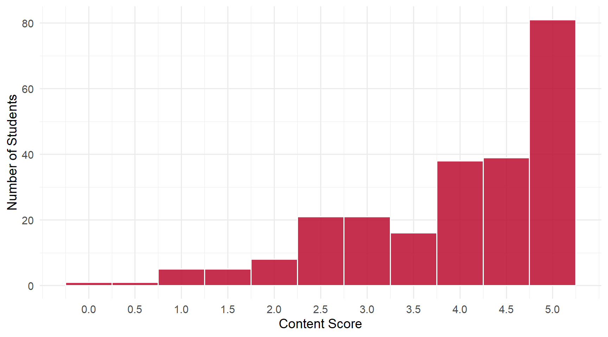
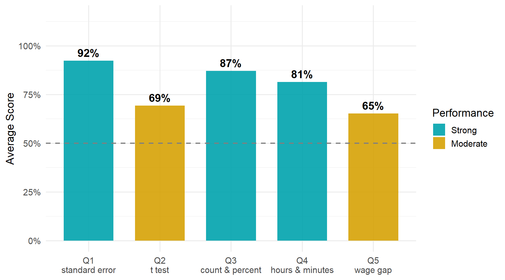

3 Daily 08 — Sep 15
3.1 Class Performance
Students: 236 | Content mean: 3.95 / 5 | Median: 4.5 | SD: 1.13 | Mean daily score: 9.58 / 10
Content scores ranged from 0 to 5 out of 5. (Your daily score adds the 8-point attendance credit for submitting; each question is worth 0.4 of the remaining 2 points.)
Two of these questions were not lost to statistics at all. On both, the class computed the right quantity and then reported it in the wrong unit, and one of them was the weakest question on the daily. That is the thing worth taking away, and it is entirely fixable.
3.2 Score Distribution
3.3 Performance by Question

ImportantThe pattern worth taking from this daily
Q5 was the weakest question on the daily, and Q4’s most common error has the same cause: the right quantity, reported in the wrong unit.
- Q4. Men work 2.25 hours per week more than women. The most common wrong answer wrote “25” in the minutes blank — the decimal “.25” copied across as though it were minutes. But 0.25 of an hour is 15 minutes.
- Q5. Men earn $4.53 per hour more than women. The most common wrong answer reported $4.53, or a number near it, in a blank that asked for a percent. A difference in dollars becomes a percentage only when you divide it by something.
Neither of these is a statistics error. Both are the last step of the problem, and both are the step that makes a number mean something to a reader. A gap of “4.53” is unreadable without knowing 4.53 of what; a gap of “19 percent” needs no further explanation.
3.4 Questions
3.4.1 Q1: The square root of the estimated variance of an estimator is called the ___.
TipCorrect Answer
The standard error. “se”, “s.e.” and “SE” are the same answer.
WarningCommon Errors
- “Standard deviation.” The dominant wrong answer, and precisely the confusion the question exists to catch. A standard deviation describes how spread out the data are. A standard error describes how spread out an estimator is across repeated samples. One is about the sample you have; the other is about how much your answer would move if you drew a different sample.
- “Sampling error,” often with “(se)” written after it. That is revealing: the abbreviation has been remembered and attached to the wrong words. The letters stand for standard error.
- Terms borrowed from elsewhere in the course — “estimate,” “estimand,” “variance,” “covariance,” “sample mean.”
- A formula instead of a name — writing \(s/\sqrt{N}\) or \(\sqrt{\widehat{\text{var}}(\bar{Y})}\). Correct, but the question asked what the quantity is called.
Misspellings of the right term cost nothing.
3.4.2 Q2: A t test compares the ___ from the sample with the hypothesized value, divided by the ___ of the estimator.
TipCorrect Answer
The estimate, divided by the estimated standard error. In symbols, a \(t\) statistic is (estimate − hypothesized value) ÷ standard error.
WarningCommon Errors
“Estimand” in the first blank. By a wide margin the most common error on the daily, and it has a specific cause: the word appears in the question itself — “the hypothesized value of the estimand.” It was lifted from the stem into the blank.
The two words sit on opposite sides of the comparison. The estimand is the unknown truth, and the hypothesized value is a guess about it. The estimate is the number your sample produced. A \(t\) test asks how far the estimate sits from the guess, measured in standard errors. Putting “estimand” in the first blank makes the test compare the truth with a guess about the truth, which is not something a sample can do.
“Mean,” “sample mean,” “average,” “difference,” “test statistic” in the first blank — reaching for a familiar word rather than the specific one.
“Standard deviation” in the second blank — the same error as Q1, and usually on the same pages. Students who missed Q1 tended to miss this too, so the two are not independent evidence.
“Square root” in the second blank — reciting how a standard error is built instead of naming it.
Only one blank filled, most often “estimate,” with nothing after the comma. This question drew more blank boxes than any other vocabulary item.
3.4.3 Q3: How many individuals are in the group, and what percent are women?
TipCorrect Answer
868 individuals — 376 women and 492 men — of whom 43 percent are women (376 ÷ 868 = 43.3%).
WarningCommon Errors
- Single-digit slips in the count. The signature error here: the scratch arithmetic is right and the number is copied into the box wrong, so 868 becomes something one stroke away. Reading the box back against your own working catches this in seconds.
- The wrong denominator on the percentage — dividing by something other than the full group of 868, which produces values in the 40s that are close but not right.
- The men’s share instead of the women’s — 57 percent, the complement of the answer.
- An unevaluated expression — “376 + 492” or “376/868” written out and never carried to a number.
- Unrounded percentages — “43.32%”, “43.3%”. The value is right; the question asked for the nearest whole number.
3.4.4 Q4: Men work on average ___ hours and ___ minutes per week more than women.
TipCorrect Answer
2 hours and 15 minutes. The difference is 2.25 hours, and \(0.25 \times 60 = 15\) minutes.
WarningCommon Errors
- “2 hours and 25 minutes.” The most common answer after the correct one. The decimal part of 2.25 was written straight into the minutes blank. Decimal hours are not minutes: 0.25 hours is a quarter of an hour, which is 15 minutes, not 25. A quick check — 25 minutes would be 0.42 hours — catches it.
- A level instead of a difference. A large group wrote the men’s average hours into the first blank, sometimes with the women’s average beside it. Both numbers were read correctly off the table; the subtraction the question asks for never happened.
- The correct total in one unit — “2.25 hours” or “135 minutes.” Right quantity, but the question asked for hours and minutes.
- A figure from the wrong row or table — most often the hourly wage gap, which belongs to Q5.
3.4.5 Q5: The gender wage gap in this group is roughly ___ percent.
TipCorrect Answer
Roughly 19 percent. Men earn $24.45 an hour on average and women $19.92, a difference of $4.53. As a share of men’s wage that is \(4.53 \div 24.45 \approx 18.5\%\), which rounds to 19.
Dividing instead by women’s wage — \(4.53 \div 19.92 \approx 23\%\) — is a defensible way to express the same gap, so answers across that range were accepted. What matters is that the difference was divided by something.
WarningCommon Errors
- Reporting the dollar difference. The single largest source of zeros on the daily: “4.53”, “$4.53”, “about 5”. The subtraction was done correctly and then never converted. See the callout above.
- Reporting the two wage levels — “19.92 and 24.45” — with no comparison formed at all.
- Reporting the ratio instead of the gap — “76%” or “82%”, meaning what women earn as a share of men’s. That is the complement of the gap, not the gap.
- Dividing in the wrong direction or by the wrong base, producing values in the 30s and 40s.
- Setting up the right ratio and leaving it unevaluated — the fraction written in the box with nothing after the equals sign.
ImportantWorth Your Attention
Q5 was the weakest question on the daily, and the reason is worth stating plainly: a difference and a percentage are different kinds of number.
\(24.45 - 19.92 = 4.53\) is a difference, measured in dollars. To turn it into a percentage you have to divide it by a base — and which base you choose is a real decision you should be able to defend, not an afterthought. Divided by men’s wage, the gap is about 19 percent; divided by women’s, about 23.
This is the same skill Daily 02 asked for when it distinguished a percentage from a percentage point, and it will keep coming back. Whenever you report a gap, ask yourself what a reader would have to already know for your number to mean something. “$4.53” requires them to know the wage level. “19 percent” does not.
3.5 What the Class Did Well
Q1 was the strongest question on the daily. The large majority named the standard error correctly, in a variety of forms — “se”, “s.e.”, the words in full, even the formula — and the term arrived intact even when the spelling did not.
The arithmetic was rarely the problem. On Q3 the scratch work was usually right; on Q4 and Q5 the computed quantity was usually right. Almost everything lost on this daily was lost in the last step, after the hard part was done.
Many students sensed the Q4 conversion was wrong. Crossed-out first attempts were common on that question, which means the instinct is there even where the conversion is not yet automatic.
3.6 What to Review
- Convert decimal hours to minutes. Multiply the decimal part by 60. 2.25 hours is 2 hours 15 minutes, not 2 hours 25.
- Turn a difference into a percentage by dividing it by a base — and say which base you used.
- Standard error, not standard deviation. One describes the data, the other describes how much your estimate would move across samples.
- Estimate versus estimand in a \(t\) test. The estimate is what your sample gave you; the estimand is the unknown truth the hypothesis is about.
- Read the rounding instruction. “Round to the nearest whole number” was widely ignored on Q3 and Q5, even by students with the right number.
NoteHow this was graded
Every paper was scored twice, independently, against the same published rubric, by graders who could not see each other’s scores or your name. The two passes agreed on more than 99% of all scores; every disagreement was reviewed a third time against the rubric and settled with a written reason. Submitting the daily earns 8 of 10 regardless of content.